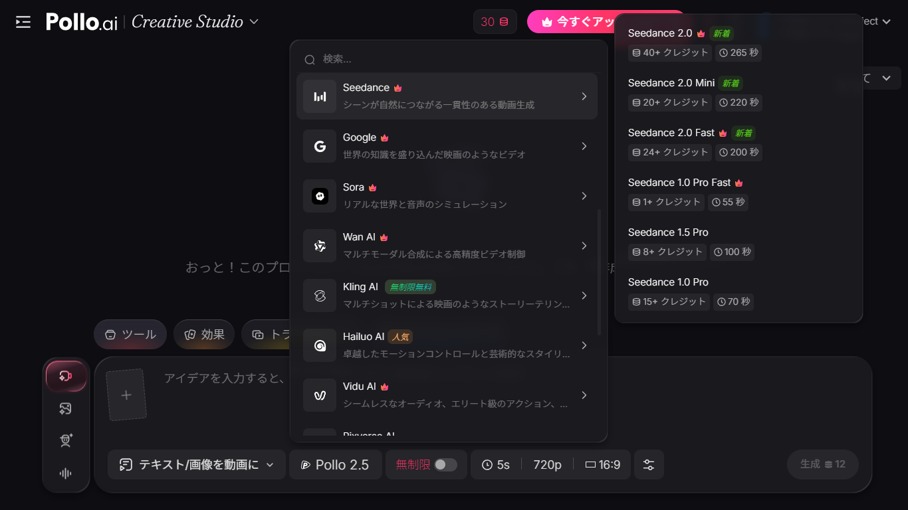
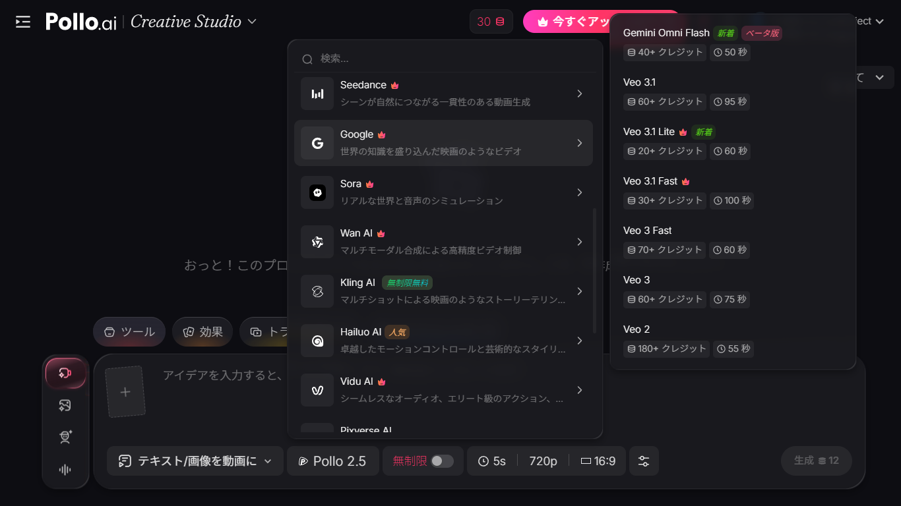

Seedance vs Kling — 2026年最も注目されるAI動画モデル対決
AI動画生成モデルの中で、2026年に最も検索されているのがSeedance（前年比+900%）とKling（10K〜100K/月の安定した検索ボリューム）です。どちらも中国発のモデルですが、設計思想や得意分野が大きく異なります。
この記事では、Seedance 2.0とKling 3.0を料金、品質特性、得意分野、クレジット消費の4つの軸で比較し、用途別にどちらを選ぶべきかを明確にします。
なお、Pollo AIを使えば両モデルを同じアカウント内で切り替えて比較できます。同じプロンプトで両方のモデルを試し、自分の用途に合う方を選ぶのが最も確実な方法です。
両モデルを同じアカウントで比較可能
Pollo AIで両モデルを試す基本スペック比較
| 比較項目 | Seedance 2.0 | Kling 3.0 |
|---|---|---|
| 開発元 | ByteDance | Kuaishou（快手） |
| 最低クレジット | 40+（有料） | 6+（無制限無料） |
| 最大動画秒数 | 265秒 | 175秒 |
| 公式サイト | なし（サードパーティ経由のみ） | あり（klingai.com） |
| 日本語プロンプト | 対応 | 対応 |
| Pollo AI上の料金 | 有料（クレジット消費） | 無制限無料 |
料金比較 — コスト差は最大40倍
最も大きな違いは料金です。
| モデル | 最安構成 | 中間構成（推定） | 最高構成 |
|---|---|---|---|
| Seedance 2.0 | 40クレジット | 100〜150クレジット | 200+クレジット |
| Seedance 2.0 Mini | 20クレジット | 80クレジット | 150クレジット |
| Kling 3.0 | 6クレジット | 30〜50クレジット | 80+クレジット |
さらに重要なのは、Kling 3.0はPollo AIの有料プランで無制限無料という点です。つまり、ライトプラン（$10/月）に入るだけで、Kling 3.0は何本でも生成し放題。Seedance 2.0は毎回クレジットを消費します。
ライトプラン（月300クレジット）での生成可能本数を比較すると、Kling 3.0は無制限、Seedance 2.0 Miniは最安構成で15本、最高構成で2本。このコスト差はどう使い分けるかの判断に直結します。


Kling 3.0は無制限無料、Seedanceは初回クレジットで試せます
無料で比較を始める品質・得意分野の比較
Seedance 2.0が得意なこと
キャラクターの一貫性。複数シーンにまたがってもキャラクターの顔や衣装が崩れにくい。シリーズ動画やストーリー性のある連続シーンに最適。
マルチモーダル入力。テキスト、参照画像、参照動画、音声を同時に指定でき、細かいコントロールが可能。プロレベルの映像制作に対応。
物理演算の自然さ。布の揺れ、水の流れ、光の反射など、物理的な挙動が自然。
Kling 3.0が得意なこと
映画的なマルチショット。1つのプロンプトから複数のカットを含む映像を生成でき、ダイナミックなシーン転換が可能。
人物の表情描写。感情表現を含むプロンプトに対して、自然な表情の変化を再現する精度が比較的高い。
コストパフォーマンス。無制限無料で何度でも試せるため、プロンプトの試行錯誤にコストがかからない。
用途別おすすめモデル
| 用途 | おすすめモデル | 理由 |
|---|---|---|
| SNS用ショート動画 | Kling 3.0 | 無料で量産可能 |
| プロンプトのテスト・練習 | Kling 3.0 | コストゼロで試行錯誤 |
| シリーズ動画（同じキャラ複数話） | Seedance 2.0 | キャラクター一貫性が必須 |
| プロモーション・広告動画 | Seedance 2.0 | 最高品質が求められる |
| プロトタイプ・企画段階 | Kling 3.0 | 無料で大量にラフを作成 |
| コスト最優先 | Kling 3.0 | 無制限無料 |
| 品質最優先 | Seedance 2.0 | 現時点で最高クラスの品質 |
最も効率的な使い方 — 2段階ワークフロー
SeedanceとKlingのどちらか一方を選ぶ必要はありません。Pollo AIなら同じアカウントで瞬時に切り替えられるため、両方の強みを活かした2段階ワークフローが可能です。
ステップ1：Kling 3.0（無料）でプロンプトを試行錯誤。構図、カメラワーク、雰囲気の方向性をコストゼロで確認します。
ステップ2：気に入ったプロンプトが見つかったら、Seedance 2.0（またはSeedance 2.0 Mini）で本番生成。品質を最大化します。
この方法なら、Seedanceのクレジットを無駄な試行に消費せず、品質が必要な最終生成にだけ集中投下できます。
両モデルを1アカウントで切り替えて使う
Pollo AIで2段階ワークフローを試すまとめ — 結局どちらがいいのか
Seedance 2.0は品質とコントロール性で勝り、Kling 3.0はコストパフォーマンスで圧倒します。どちらが「良い」かは用途次第です。
初めてAI動画を試すならKling 3.0（無料）から始めるのが最善です。AI動画のポテンシャルを理解した上で、より高い品質が必要になったらSeedance 2.0にステップアップする。この段階的アプローチが最も合理的です。
そして、この使い分けを最もスムーズに実現できるのが、両モデルを1つのプラットフォームに集約しているPollo AIです。
各モデルの詳しい使い方は、Seedance 2.0使い方ガイドとKling 3.0使い方ガイドをご覧ください。
無料アカウントで今すぐ両モデルを比較
Pollo AIを無料で始める